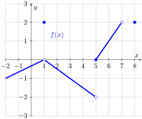

Determine where a function is and is not continuous.
Subsection1.4.1Activities
Remark1.4.1.
A continuous function is one whose values change smoothly, with no jumps or gaps in the graph. We'll explore the idea first, and arrive at a mathematical definition soon.
Activity1.4.2.
Which of the following scenarios best describes a continuous function?
The age of a person reported in years
The price of postage for a parcel depending on its weight
The volume of water in a tank that is gradually filled over time
The number of likes on my latest TikTok depending on the time since I posted it
Remark1.4.3.
How would you use the language of limits to clarify the definition of continuity?
Activity1.4.4.
A function \(f\) defined on \(-4 \lt x \lt 4\) has the graph pictured below. Use the graph to answer each of the following questions.
Figure18.
(a)
For each of the values \(a = -3\text{,}\)\(-2\text{,}\)\(-1\text{,}\)\(0\text{,}\)\(1\text{,}\)\(2\text{,}\)\(3\text{,}\) determine whether the limit \(\lim_{x \to a} f(x)\) exists. If the limit does not exist, be ready to explain why not.
(b)
For each of the values of \(a\) where the limit of \(f\) exists, determine the value of \(f(a)\) at each such point.
(c)
For each such \(a\) value, is \(f(a)\) equal to \(\lim_{x \to a} f(x)\text{?}\)
(d)
Use your understanding of continuity to determine whether \(f\) is continuous at each value of \(a\text{.}\)
(e)
Any revisions would you want to make to your definition of continuity that you arrived at toward the end of Remark 1.4.3?
Definition1.4.5.
A function \(f\) is continuous at \(x = a\) provided that
\(f\) has a limit as \(x \to a\)
\(f\) is defined at \(x = a\) (equivalently, \(a\) is in the domain of \(f\)), and
\(\lim_{x \to a} f(x) = f(a)\text{.}\)
Activity1.4.6.
Suppose that some function \(h(x)\) is continuous at \(x = -3\text{.}\) Use Definition 1.4.5 to decide which of the following quantities are equal to each other.
\(\displaystyle \lim_{x \to -3^+} h(x)\)
\(\displaystyle \lim_{x \to -3^-} h(x)\)
\(\displaystyle \lim_{x \to -3} h(x)\)
\(\displaystyle h(-3)\)
Activity1.4.7.
Consider the function \(f\) whose graph is pictured below (it's the same graph from Activity 1.4.4). In the questions below, consider the values \(a = -3\text{,}\)\(-2\text{,}\)\(-1\text{,}\)\(0\text{,}\)\(1\text{,}\)\(2\text{,}\)\(3\text{.}\)
Figure19.
(a)
For which values of \(a\) do we have \(\lim_{x \to a^-} f(x) \ne \lim_{x \to a^+} f(x)\text{?}\)
(b)
For which values of \(a\) is \(f(a)\) not defined?
(c)
For which values of \(a\) does \(f\) have a limit at \(a\text{,}\) yet \(f(a) \ne \lim_{x \to a} f(x)\text{?}\)
(d)
For which values of \(a\) does \(f\) fail to be continuous? Give a complete list of intervals on which \(f\) is continuous.
Activity1.4.8.
Which condition is stronger, meaning it implies the other?
\(f\) has a limit at \(x = a\)
\(f\) is continuous at \(x = a\)
Activity1.4.9.
Previously, you have used graphs, tables, and formulas to answer questions about limits. Which of those are suitable for answering questions about continuity?
Graphs only
Formulas only
Graphs and formulas only
Tables and formulas only
Activity1.4.10.
Consider the function \(f\) whose graph is pictured below.

Figure20.The graph of \(f(x)\text{.}\)
Give a list of \(x\)-values where \(f(x)\) is not continuous. Be prepared to defend your answer based on Definition 1.4.5.
Remark1.4.11.
When \(\lim_{x \to a} f(x)\) exists but is not equal to \(f(a)\text{,}\) we say that \(f\) has a removable discontinuity at \(x = a\text{.}\) This is because if \(f(a)\) were redefined to be equal to \(\lim_{x \to a} f(x)\text{,}\) the redefined function would be continuous at \(x = a\text{,}\) thus “removing” the discontinuity.
When the left and right limit exist separately, but are not equal, the discontinuity is not removable and is called a jump discontinuity.
Activity1.4.12.
(a)
Determine the value of \(b\) to make \(h(x)\) continuous at \(x=5\text{.}\)
\begin{equation*}
h(x) = \begin{cases}
b - x, & x < 5 \\
-x^{2} + 6 \, x - 6, & x \geq 5
\end{cases}
\end{equation*}
(b)
Classify the type of discontinuity present at \(x=-6\) for the function \(f(x)\text{.}\)
\begin{equation*}
f(x) = \begin{cases}
-8 \, x - 46, & x < -6 \\
6, & x = -6 \\
4 \, x + 30, & x > -6 \\
\end{cases}
\end{equation*}
Theorem1.4.13.
If \(f\) and \(g\) are continuous at \(x = a\) and \(c\) is a real number, then the functions \(f + g\text{,}\)\(f - g\text{,}\)\(cf\text{,}\) and \(fg\) are also continuous at \(x = a\text{.}\) Moreover, \(f/g\) is continuous at \(x = a\) provided that \(g(a) \ne 0\text{.}\)
Activity1.4.14.
Answer the questions below about piecewise functions. It may be helpful to look at some graphs.
(a)
Which values of \(c\text{,}\) if any, could make the following function continuous on the real line?
\begin{equation*}
g(x) = \begin{cases}
x + c \amp x \leq 2 \\
x^2 \amp x \gt 2
\end{cases}
\end{equation*}
(b)
Which values of \(c\text{,}\) if any, could make the following function continuous on the real line?
\begin{equation*}
h(x) = \begin{cases}
4 \amp x \leq c \\
x^2 \amp x \gt c
\end{cases}
\end{equation*}
(c)
Which values of \(c\text{,}\) if any, could make the following function continuous on the real line?
\begin{equation*}
k(x) = \begin{cases}
x \amp x \leq c \\
x^2 \amp x \gt c
\end{cases}
\end{equation*}
Theorem1.4.15.Intermediate Value Theorem.
Suppose that:
the function \(f\) is continuous on the interval \([a,b]\) ;
you pick a value \(N\) such that \(f(a)\leq N \leq f(b)\) or \(f(b)\leq N \leq f(a)\text{.}\)
Then, there is some input \(c\) in the interval \([a,b]\) such that \(f(c)=N\text{.}\)
Activity1.4.16.
In this activity we will explore a mathematical theorem, the Intermediate Value Theorem.
(a)
To get an idea for the theorem, draw a continuous function \(f(x)\) on the interval \([0,10]\) such that \(f(0)=8\) and \(f(10)=2\text{.}\) Find an input \(c\) where \(f(c)=5\text{.}\)
(b)
Now try to draw a graph similar to the previous one, but that does not have any input corresponding to the output 5. Then, find where your graph violates these conditions: \(f(x) \) is continuous on \([0,10]\text{,}\)\(f(0)=8\text{,}\) and \(f(10)=2\text{.}\)
(c)
The part of the theorem that starts with “Suppose…” forms the assumptions of the theorem, while the part of the theorem that starts with “Then…” is the conclusion of the theorem. What are the assumptions of the Intermediate Value Theorem? What is the conclusion?
(d)
Apply the Intermediate Value Theorem to show that the function \(f(x) = x^3 +x -3\) has a zero (so crosses the \(x\)-axis) at some point between \(x=-1\) and \(x=2\text{.}\) (Hint: What interval of \(x\) values is being considered here? What is \(N\text{?}\) Why is \(N\) between \(f(a)\) and \(f(b)\text{?}\))